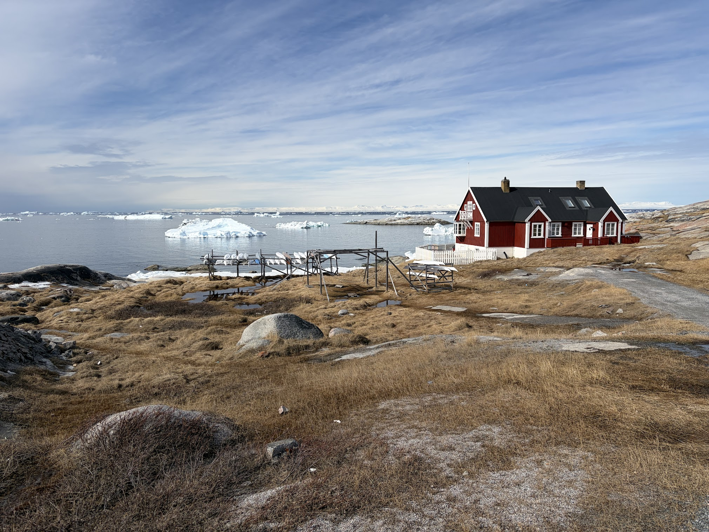

69°13′N — Disko Bay, Greenland
Ilulissat Science Service supports researchers, institutions, and innovators working in one of the world's most critical — and breathtaking — Arctic environments.
What we offer
We provide logistical and scientific support for teams working in and around Ilulissat and Disko Bay — from planning and transport to field equipment and local knowledge.
Field access to Sermeq Kujalleq, one of the world's fastest-moving glaciers. Equipment, guides, and support for studies of the calving glacier and its icebergs.
→ Field scienceVessel access in Disko Bay and Ilulissat Icefjord. Water sampling, bathymetry, and ecosystem monitoring support throughout the season.
→ Marine researchArctic drone logistics and satellite data integration for ocean and cryosphere monitoring.
→ Remote sensingFull logistics coordination: helicopter, accommodations, research permits, equipment shippment & storage, and local transportation.
→ OperationsField training and expedition support for groups and individuals. Climate change education rooted in direct observation at the ice edge.
→ EducationCollaboration with local Greenlandic communities, indigenous knowledge integration, and culturally responsible research protocols.
→ PartnershipWho we are
Ilulissat Science Service is a local startup founded by a team with deep roots in Greenland's scientific and community life. We endevour to make world-class Arctic research accessible, sustainable, and respectful of this remarkable place.
Where we are
Situated on the shores of Disko Bay at 69°N, Ilulissat is the gateway to the Ilulissat Icefjord — a UNESCO World Heritage Site and one of the most scientifically significant Arctic locations on Earth.

Ilulissat, West Greenland · Photo: Kerim H. Nisancioglu
Get in touch
Whether you're planning a multi-week field campaign or exploring feasibility, reach out and we'll help you find the right approach for your scientific goals.